|
🌓 切换主题
DarrenPig ( 常州工 朱佩韦 )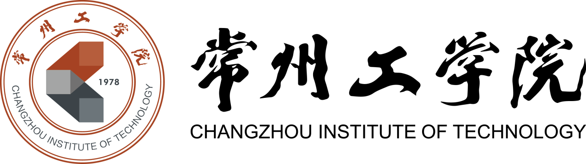 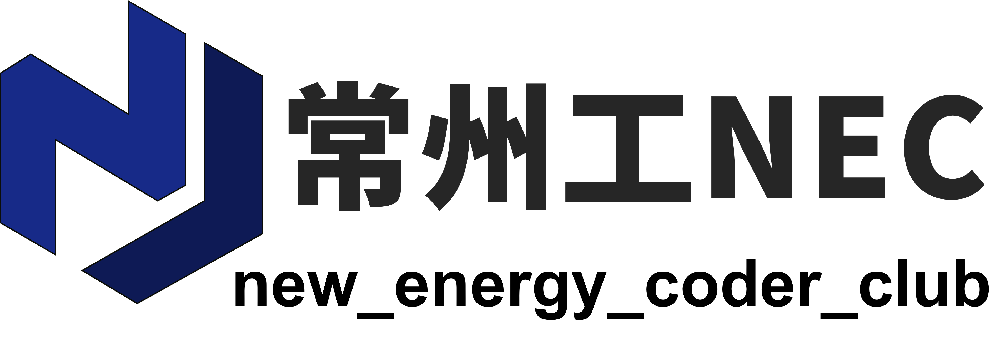 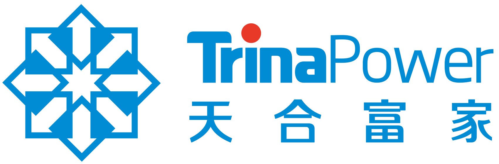 🎓 Final Year Undergraduate Student @ CIT🦾 openEuler & RT-Thread Embedded Developer🧸 maintainer of new_energy_coder_club

|
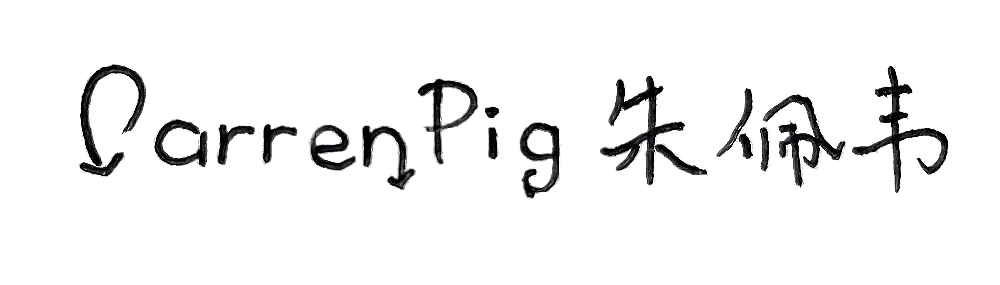 |

Biography
I have won a silver medal in the National College Students' Career Planning Competition Jiangsu Regional Finals and three national Third Prize in the National College Students' Robot Competition ROBOCONrobotics competition. I also being the youngest to hold the position (The domestic market share of server operating systems exceeds over 50% in China)openEuler Nanjing ambassador and "Excellent Reading Star of CIT(读者之星)" which was the recipient of the highest honor in reading for undergraduate students at CIT (rk 1/900).
My research interests mainly focus on Embedded BSP (嵌入式板载操作系统) | Robotic (机器人学) | Embodied AI (具身智能), especially on Robotic RTOS control (机器人运行时控制), Yocto customized operating system (操作系统移植) and Humanoid Robot Embedded Develop (人形机器人嵌入式开发).
I am also a Blogger with over 3.5k followers at [CSDN](https://darrenpig.blog.csdn.net/).
Feel free to contact me by email if you are interested in discussing or collaborating with me.
News
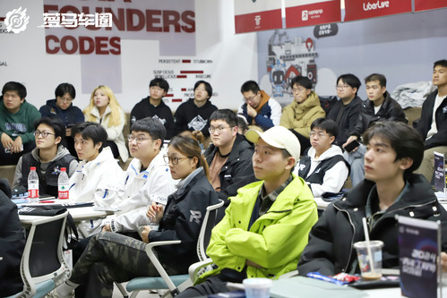
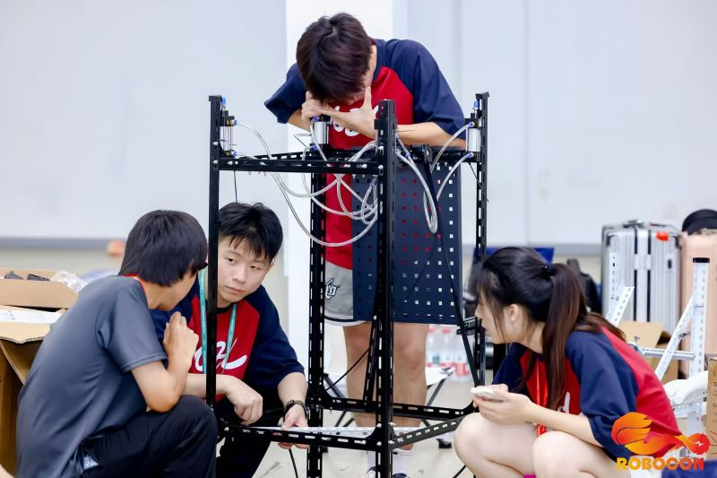
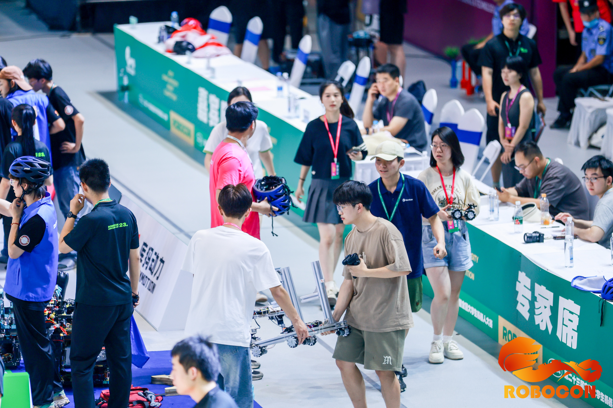

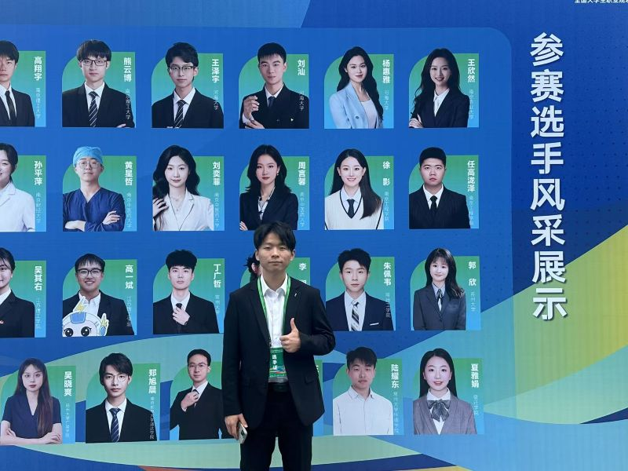

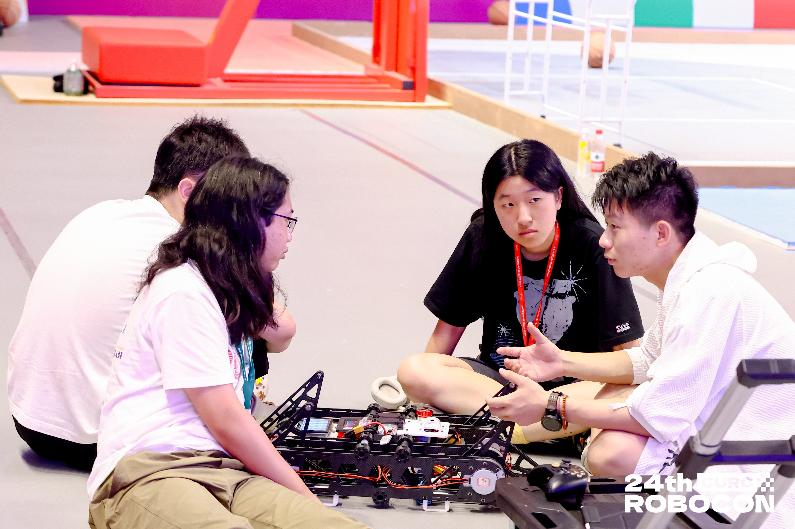
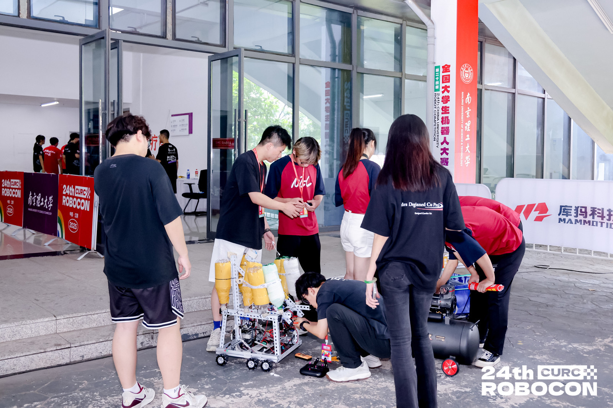
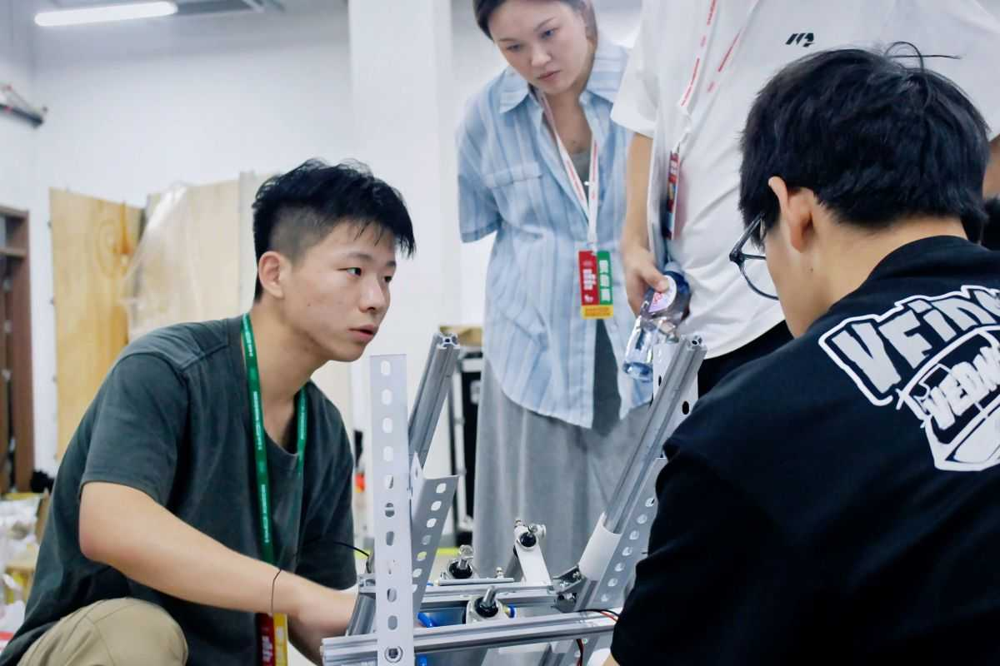
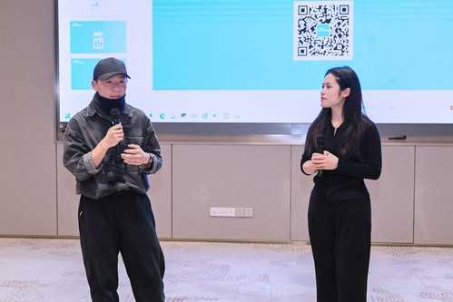
Video


- [06/2025] Released a new version of NECLab's embedded BSP framework.
- [05/2025] Won the Best Paper Award at the International Conference on Robotics and Automation!
- [04/2025] Our team's robotic control algorithm achieved state-of-the-art performance in the national competition!
- [03/2025] Invited to give a keynote speech at the RT-Thread.
- [02/2025] Our research on RTOS optimization for robotics received significant media coverage!
Portfolio
|
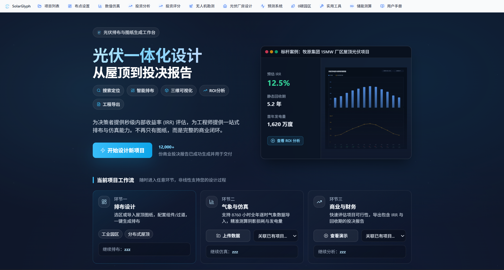 |
2024 – Present, Full-stack Developer & Project Lead An integrated design, simulation, and investment analysis platform for photovoltaic projects, covering site selection, 8760-hour time-series simulation, and PV-storage-charging ROI modeling.
|
|
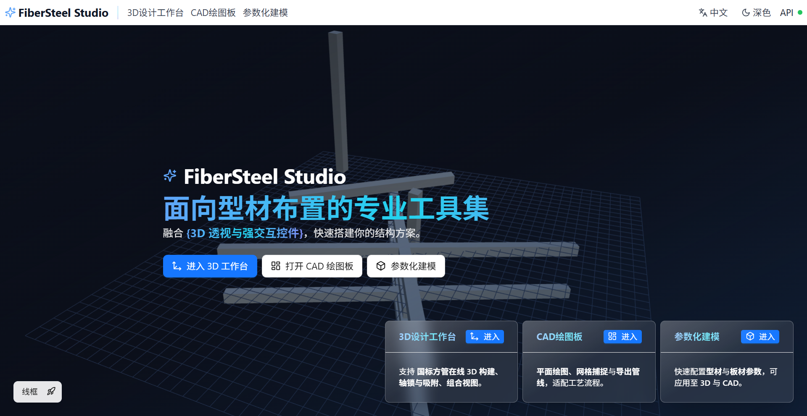 |
2024 – Present, Founder & Lead Developer A creative design studio and interactive web laboratory focusing on digital fabrication, structural visualization, and immersive frontend experiences.
|
|
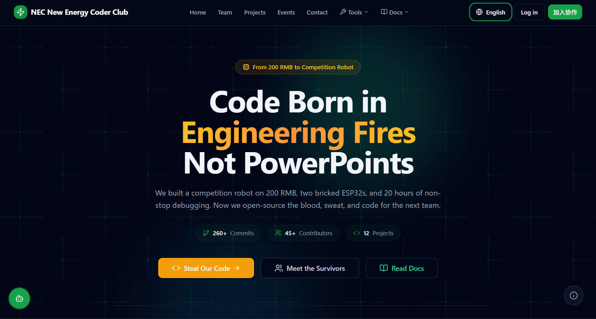 |
2023 – Present, Founder & Maintainer An open-source collaboration platform centered on new energy technology, robotics development, and competition projects. From 200 RMB budgets to national competition robots.
|
Education & Visiting
|
|
Changzhou Institute of Technology (CIT) School of Photoelectric EngineeringB.Eng. in New Energy Science and Engineering
GPA 2.9/3.0 Ranked 1st among 900 undergraduates Sep. 2022 - June. 2026
|
|
|
The University of Sydney (SYD) Faculty of EngineeringAcademic Visitor in School of Chemical and Biomolecular Engineering
July. 2024 - Nov. 2024
|
Research & Work Experience
|
|
NECLab, Changzhou Institute of Technology Sep. 2023 - Present, Founder & Lead Researcher Supervised by Prof. Siwen Gu |
Competition Awards
|
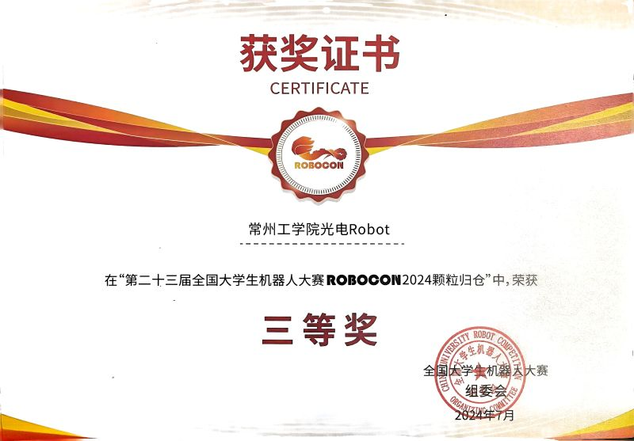 |
National College Students' Robot Competition ROBOCON
National Third Prize With Team CIT. Supervised by Prof. Siwen Gu.
|
|
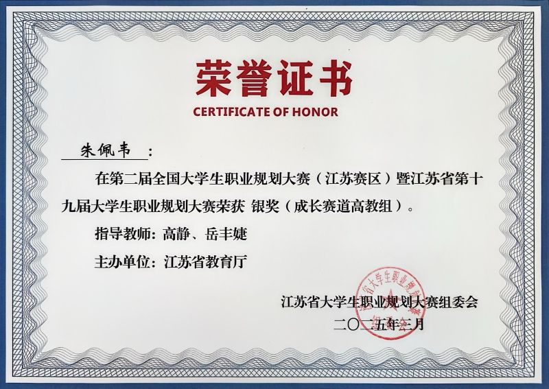 |
National College Students' Career Planning Competition
Provincial Silver Medal Finalist among 700+ participants.
|
Honors

|
openEuler Nanjing Ambassador |
Open-source Projects
🚀 New Energy Coder Club
Project Overview: New Energy Coder Club is an open-source collaboration platform centered on technology sharing and practical growth, focusing on new energy technology, robotics development, and competition projects.
Core Features:
- 🏆 Competition Resource Library:Provides comprehensive preparation resources for National College Student Robot Contest ROBOCON, including FRC blueprints, hardware design templates, and embedded development cases
- 🤖 Humanoid Robot Development:Aims to develop open-source humanoid robots under 10K RMB, covering BSP development, ROS integration, algorithm control, etc.
- ⚡ New Energy Technology:Focuses on IoT and automation control, combining open-source ecosystems like openEuler to explore smart hardware innovation
- 👥 Open Source Community:40+ developers collaborating, providing complete technical closed-loop from theory to implementation
Tech Stack: openEuler Embedded, ROS, ESP32, FRC, MayCAD, Embedded BSP Development
🤖 BB8 Remake
Project Overview: A self-balancing spherical robot inspired by Star Wars BB-8, featuring real-time motion control, stabilized head mechanism, and wireless remote operation.
Core Features:
- 🎯 Self-Balancing Drive:Inverted pendulum dynamics with dual-wheel differential drive inside the sphere
- 🧲 Stabilized Head:Magnetic levitation and roller support mechanism for smooth head movement
- 📡 Wireless Control:Custom Bluetooth/Wi-Fi remote protocol with real-time telemetry feedback
- 📊 Motion Feedback:Onboard IMU fusion for attitude estimation and PID-based stabilization
Tech Stack: STM32, ESP32, PID Control, IMU Fusion, Bluetooth LE, 3D Printing
Connect with Me
WeChat ID: Pei-pei-Zhu-Pig
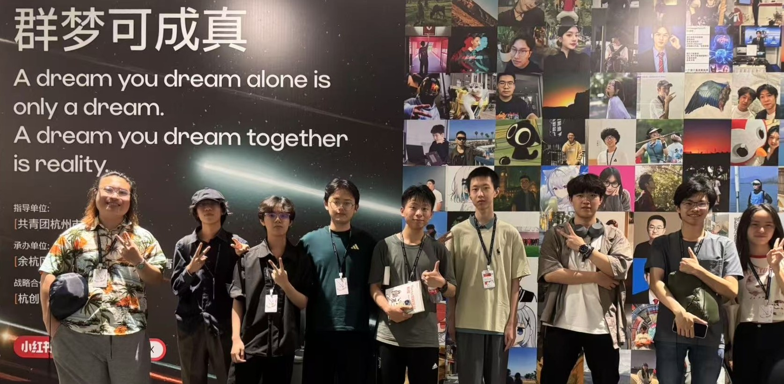